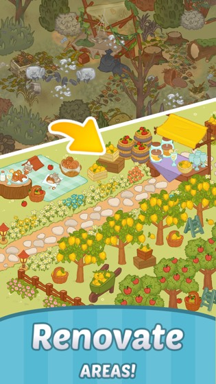
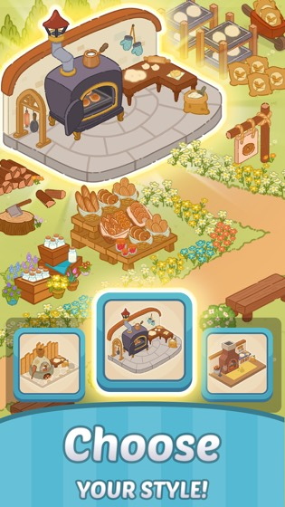
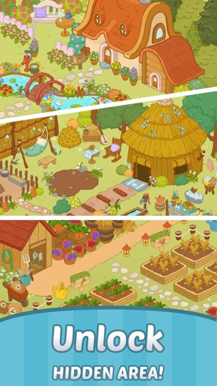
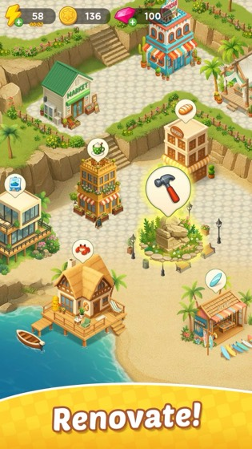
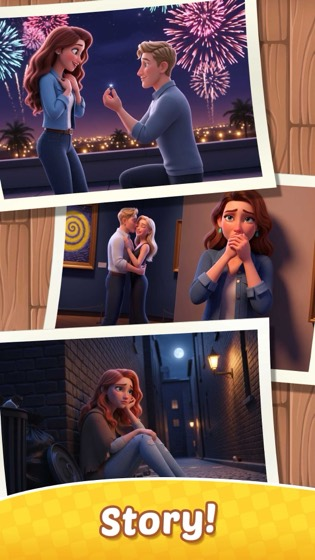
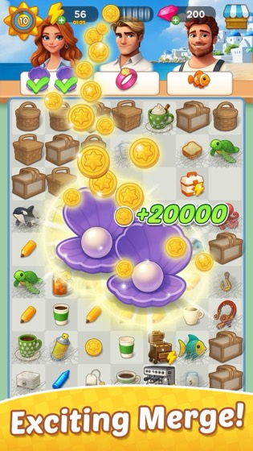
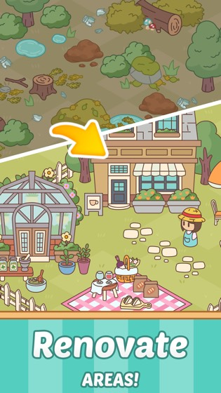
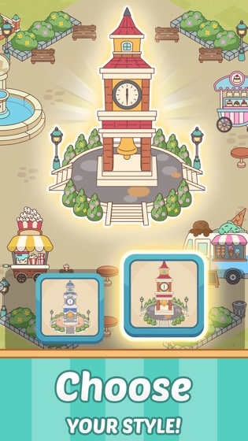
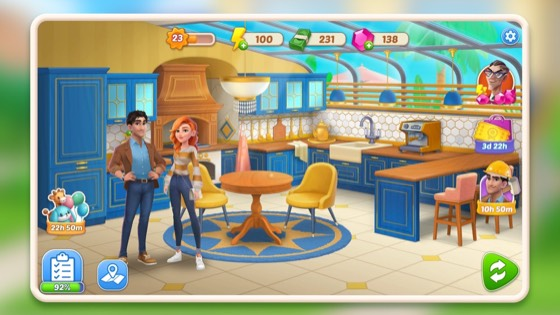

원그램 머지 시리즈 우리가 만들어온 건 전부 오픈형 계열입니다
타이틀별 실제 매출은 공개 자료로 확정할 수 없습니다(분석 사이트 퍼블리셔 페이지는 유료 로그인 벽). 아래 상위 3은 스토어 평점 수(Google Play + App Store 합) 기준이며, 다운로드 구간·서비스 기간·업데이트 성격으로 교차 확인만 했습니다.
1위(머지 카툰)만 네 지표가 모두 일치합니다. 나머지는 지표끼리 반대를 가리켜 순서를 확정하지 않았습니다 — 머지 멘드는 평점 수로는 해변보다 아래인데 다운로드 구간은 500K+로 해변(100K+)보다 위입니다.
| 게임 | 출시 | 평점 수 | GP DL | 메타 구조 | 아트 스타일 |
|---|---|---|---|---|---|
| 머지 카툰Merge Cartoon : Renovate Town | 2023-01 | 10,084 | 500K+ | 오픈형 | 굵은 아웃라인 플랫 벡터 + 아이소메트릭, 파스텔 저채도 |
| 머지 해변Merge Beach : Gossip & Mystery · 최신작 | 2025-06 | 3,463 | 100K+ | 오픈형 + 스토리 | 3D CG 인물 컷신 + 지중해풍 아이소메트릭, 시리즈 최고 채도 |
| 머지 멘드Merge Mend : Renovate Town · 순위 불확정 | 2023-12 | 2,988 | 500K+ | 오픈형 | 머지 카툰과 거의 동일 계열 |
| 머지 항해Merge Voyage : Renovate Ship | 2023-09 | 1,283 | 50K+ | 확인 필요 | 스크린샷 미수집 — 판정 보류 |
머지 카툰 — 오픈형 (평점 수 1위)



머지 해변 — 오픈형 + 스토리 레이어 (최신작, 평점 4.69로 시리즈 최고)



머지 멘드 — 오픈형 (다운로드 구간 500K+로 카툰과 동급)


카툰(2023)·멘드(2023)·해변(2025) 모두 오픈형입니다 — 끊기지 않는 아이소메트릭 맵에 "Renovate AREAS" / "Unlock HIDDEN AREA"로 영역을 붙여 확장하고, 스팟마다 스타일 3종 중 하나를 배치합니다. 구조가 일관돼 있어서 축적된 노하우가 그대로 이어집니다.
네이티브에서는 이 구조가 자연스럽습니다. 설치 후 로컬에서 읽으니 맵이 커져도 진입 비용이 늘지 않고, GPU 압축 텍스처라 디코드도 사실상 공짜입니다. 웹에서는 같은 구조가 다르게 작동합니다 — 완성한 영역도 계속 보여야 하므로 한 시점에 동시에 올라가 있어야 하는 양(peak)이 콘텐츠와 함께 자랍니다. 그 peak가 매 진입의 다운로드·디코드로 되돌아옵니다.
즉 우리가 가장 잘하는 구조가 웹에서 가장 비싼 구조입니다. 포기하자는 뜻이 아니라, 그 비용이 정확히 어디에 붙는지 알고 시작해야 한다는 뜻입니다 — 그게 §5입니다.
타이틀별 참여 범위·직무·기간은 공개 자료로 확인할 수 없어 비워뒀습니다. 그 외 미확정: 실매출 순위(프록시로 대체) · 해변과 멘드의 순서(지표 상충) · 머지 항해의 메타 구조(스크린샷 미수집) · 해변의 스토리와 꾸미기 맵의 결합 관계 · 멘드가 카툰의 후속인지 여부 · Android 출시일의 일 단위 정확도.
네이티브 머지에서 굳어진 아트 관행 웹으로 오면서 재검토가 필요한 전제들
아래는 §1의 스토어 실측에서 역추적한 후보입니다. 각 항목이 실제 작업 방식이었는지는 당사자 확인 전이므로 확정이 아닙니다. 확인되면 확정으로 올리고, 아니면 내립니다.
| 네이티브에서의 전제 | §1에서 관찰된 근거 | 웹에서 재검토가 필요한 이유 |
|---|---|---|
| 세로 고해상도 원본 | 스토어 스크린샷이 전부 1080×1920 세로 | 웹은 디자인 해상도가 720대. 1080 기준으로 그리면 픽셀이 2.25배 → 그만큼 디코드 비용 |
| 연속 아이소메트릭 맵 | 카툰·멘드·해변 모두 끊기지 않는 맵 확장 | 맵이 이어지면 아틀라스·번들 경계를 그을 수 없음 → 에셋 누적(§5) |
| 스팟별 스타일 3종 택1 | "Choose YOUR STYLE!" 화면 — 같은 자리에 베리에이션 3개 | 같은 좌표에 3배 물량. 웹에서는 선택 안 된 2개도 같은 아틀라스에 실릴 수 있음 |
| 고채도 3D CG 아트 | 머지 해변의 3D CG 인물 컷신 — 시리즈 중 최고 채도 | 그라데이션·광택은 팔레트 양자화가 안 통함 → 압축 여지 상실(§3) |
| 기기 티어별 에셋 세트 | 확인 필요 — 스토어에서는 판별 불가 | 웹은 세트가 늘면 총 배포량이 늘어 역효과. 티어는 번들로 처리 |
| 이미지에 구운 텍스트 | 확인 필요 — 스토어 스크린샷은 영문·한글 양쪽 존재 | 런타임 10언어 + RTL이면 언어당 이미지가 배로(§6-7) |
위 6개 중 실제로 그렇게 작업했던 것과 아니었던 것을 갈라 주시면 이 섹션을 확정으로 올립니다. 특히 마지막 2개(기기 티어별 세트 / 구운 텍스트)는 스토어 자료로는 판별이 안 됩니다.
웹에서 깨지는 지점 병목이 GPU가 아니라 CPU 디코드다 — 사내 라이브 웹 게임 로딩 실측
로딩 24초를 쪼갠 결과
| 구간 | 비중 | 실제 정체 원인 | 병목 축 |
|---|---|---|---|
부팅 + index.js(2.8MB) 다운로드·파싱 + 인트로 씬 |
45% | JS 파싱 + 네트워크 | CPU + 네트워크 |
| 프리게임 팝업 preload | 24% | 텍스처 디코드 | CPU |
| 메인 화면 최초 표시 | 16% | 텍스처 디코드·활성화 | CPU |
| 서버 로그인 체인 | 12% | 서버 왕복 | 네트워크 |
| 데일리 팝업 + 게임 팝업 | 4% | — | — |
중요한 건 순위가 아니라 축입니다. 2·3번 구간(합 40%)은 대역폭을 두 배로 늘려도 거의 줄지 않습니다 — 이미 받아온 PNG를 CPU가 픽셀로 펼치는 시간이기 때문입니다. 반대로 4번은 CPU를 조여도 거의 안 커집니다. 그래서 "이미지 용량을 줄였다"와 "로딩이 빨라졌다"가 따로 움직입니다.
저사양 기기는 단일 스레드입니다. 디코드 작업 두 개를 "동시에 겹쳐서" 상쇄하려는 시도는 실측에서 효과 0이었습니다 — 번갈아 처리될 뿐입니다.
실측으로 기각된 직관 3개
| 직관 | 판정 | 실측 |
|---|---|---|
| 서버가 느려서 로딩이 길다 | 기각 | 서버 체인은 전체의 12%. 최적화 시도 5건 전부 롤백 — 크리티컬 패스가 아니었음 |
| 스프라이트를 아틀라스로 모으면 빨라진다 | 기각 | 총 픽셀이 줄지 않으면 디코드 시간 불변(0). 재그룹만으로는 이득 없음 |
| 서버가 brotli로 압축해주니 이미지 용량은 덜 중요하다 | 기각 | PNG는 이미 deflate 압축본. 재압축 절감 0.1~0.4%. 1.20MB 아틀라스 → gzip-9 1.18MB(−1.59%), DevTools 전송값도 1,227kB로 동일 |
한동안 팀 문서에 "1.2MB 아틀라스는 brotli 전송이면 261KB"라고 적혀 있었습니다. 이 수치를 근거로 아틀라스 재분할 작업이 불필요하다고 기각됐습니다. 나중에 실측했더니 4.7배 틀린 값이었습니다. 다만 그렇다고 재분할이 정답이 된 것도 아닙니다 — 그 구간의 정체는 다운로드가 아니라 디코드였고, 총 픽셀이 줄지 않으면 재분할 이득은 여전히 0입니다.
원인은 단순합니다. brotli는 JS·JSON 같은 텍스트에는 잘 먹지만 PNG에는 거의 안 먹습니다. 텍스트에서만 성립하는 명제를 이미지에 적용한 실수였습니다. 규칙: 이미지 용량 판단은 빌드 산출물의 raw 바이트나 추정 압축률이 아니라, DevTools Network의 transferred 값으로만 합니다.
그럼 무엇이 실제로 줄어드나 — 압축 여지 실측
| 대상 아틀라스작은 스프라이트 세트 5종 | 현재 | 256색 팔레트 | WebP q90~92 |
|---|---|---|---|
| 아틀라스 A — 165×985중형 스프라이트 세트 | 177.1KB | 32.5KB 33.1dB | 42.5KB 32.8dB |
| 아틀라스 B — 128×949동일 규격 소형 26장 | 132.7KB | 21.9KB 36.1dB | 44.0KB 39.2dB |
| 아틀라스 C — 220×906패턴 변형 12장 | 86.2KB | 32.8KB 34.5dB | 35.7KB 31.6dB |
| 아틀라스 D — 110×4533장 | 61.0KB | 6.8KB 34.6dB | 5.5KB 34.2dB |
| 아틀라스 E — 44×163아이콘급 4장 | 8.7KB | 2.6KB 37.6dB | 3.8KB 37.1dB |
| 합계 | 465.7KB | 96.6KB (−79%) | 131.5KB (−72%) |
측정한 벤치 프로젝트의 빌드 산출물은 PNG 86장 26.1MB 중 81장이 RGBA8888(알파 포함 32비트 트루컬러)이고
팔레트는 2장뿐입니다. 오토 아틀라스 설정의 platformSettings가
비어 있어 양자화·WebP 프리셋이 한 번도 적용된 적이 없습니다.
즉 위 −79%는 이론값이 아니라 아직 안 쓴 레버입니다.
다만 전부에 걸 수는 없습니다. 괄호의 dB는 화질(PSNR)입니다. 평면 색·단색 위주 에셋은 팔레트로 내려도 티가 잘 안 나지만, 그라데이션·외곽 글로우가 있는 에셋은 밴딩이 눈에 보입니다. 그래서 §6 규격에서 에셋을 두 티어로 나눠서 인계받는 방식을 제안합니다.
네이티브 vs 웹 축별 대조 — 좌측은 관행, 우측은 실측
| 축 | 네이티브 앱 (스토어 배포) | 웹 / Facebook Instant Games — 사내 라이브 웹 게임 실측 |
|---|---|---|
| 최초 진입 비용 | 스토어 설치 1회 → 이후 로컬에서 읽음 | 매 진입이 네트워크. 부팅 구간 45%가 다운로드+파싱 |
| 용량 한계 | APK/IPA 수백 MB + 추가 다운로드 | 부팅 index.js 2.8MB만으로 45%를 차지 |
| 텍스처 포맷 | ETC2 / ASTC / PVRTC — GPU 압축, 디코드가 사실상 공짜 | GPU 압축 사실상 못 씀 → PNG·JPEG·WebP, CPU 디코드가 비용 |
| 병목 | GPU / 메모리 | CPU 디코드 + JS 파싱 (실측 24% + 16%) |
| 해상도 전략 | 기기 티어별 에셋 세트 다중 운영 | 저해상도 티어 번들 일부, 기본은 1× 단일 세트 |
| 화면 방향 | 대개 세로 고정 · 해상도는 기기 그대로 | 세로 고정이지만 한 축은 항상 가변 — 신규는 가로 720 고정 / 세로 1280~1559(§6-1) |
| 폰트 | 시스템 폰트 자유 사용 | woff2 1종(PoetsenOne) — 폰트 대기 자체가 로딩 후보 |
| 공유·바이럴 표면 | 스토어 스크린샷, 딥링크 | FB 오버레이 XML + 공유 JPEG — 아틀라스 밖 개별 원본 필요 |
| 플레이어 이름·사진 | 엔진에서 렌더 | DOM 오버레이(플랫폼 정책) — 엔진 위 별도 레이어 |
| 로컬라이즈 | 스토어별 빌드로 분리 가능 | 런타임 10개 언어 · 아랍어(RTL) 포함 |
| 리소스 갱신 | 앱 업데이트 + 심사 | 배포 즉시. 단 <link rel=preload>가 빌드 해시 경로를 물고 있어 유지비 발생 |
좌측 열은 일반적인 네이티브 관행 서술이고 수치가 없습니다. 우측만 현재 라이브 프로젝트 실측입니다. 좌우 절대값을 비교하는 표가 아니라, 어떤 축에서 판단 기준이 바뀌는지를 보는 표입니다.
데코레이션 오픈형 vs 단편형 메타 구조가 이미지 리소스 관리를 먼저 결정합니다
1. 두 구조의 차이
소재가 "호텔 한 채" 같은 단일 건물이면 오픈형처럼 읽히지만, 플레이어가 보는 화면이 방 단위 독립 씬이면 단편형입니다. 반대로 머지 해변은 스토리가 에피소드 단위인데 꾸미기 맵은 연속이라 오픈형입니다. 판정 기준은 소재나 스토리가 아니라 "한 화면에 이어져 보여야 하는가"입니다. 이게 곧 아틀라스·번들 경계를 그을 수 있는지를 결정합니다.
2. 웹에서의 실제 비용 — 사내 라이브 게임에서 빌린 숫자
머지 신규 프로젝트에는 아직 잴 것이 없으므로, 사내 라이브 웹 게임에서 빌린 숫자입니다. 그 게임은 꾸미기 영역 14개(연속 맵 확장 = 오픈형 성격)와 독립 컷 단위 수집 콘텐츠(단편형 성격)를 둘 다 갖고 있어 두 구조의 비용을 같은 조건에서 비교할 수 있습니다. 머지의 꾸미기 메타와 완전히 같은 구조는 아니므로 비용의 자릿수와 방향을 보는 대리 지표로 읽어 주세요.
| 영역 1개를 추가하면 | 바이트 | 픽셀 | 언제 받는가 |
|---|---|---|---|
| 데코 오브젝트 아틀라스 | 933.7KB | 1.724Mpx | 온디맨드 그 영역에 들어갈 때만 |
| 영역 배경 원본 1600×1200 | 160.7KB | 1.920Mpx | 온디맨드 |
| 저해상도 프록시 533×400 | 21.0KB | 0.335Mpx14장 평균 · 규격 이탈 1건 포함 | 인트로 이름 지정 1장만 |
| 조망 화면 썸네일 | 170.9KB | 0.094Mpx | 메인 진입마다 전량 |
| 합계 | 1,286KB | 4.073Mpx | 이 중 약 85%는 영역 수와 무관(933.7+160.7)÷1,286 |
"오픈형이니까 영역이 늘면 초기 로딩이 무거워진다"고 예상했는데, 실측은 반대였습니다. 영역 원가의 약 85%는 온디맨드입니다 (데코 아틀라스 933.7KB + 배경 160.7KB ÷ 합계 1,286KB) — 지금 들어간 영역만 받으므로 영역이 30개가 되어도 진입 비용이 그만큼 늘지 않습니다.
영역 수에 선형 비례하는 것은 단 하나, 조망 화면 썸네일뿐입니다. 메인 화면에 들어갈 때마다 전량 로드되기 때문입니다. 영역 1개당 170.9KB이므로 28개가 되면 4.67MB가 매 진입에 붙습니다. 지금도 14장을 다 받는데 실제 노출은 12장이라 341.8KB는 상시 낭비입니다.
그래서 오픈형의 리소스 설계는 "맵을 어떻게 쪼갤까"가 아니라 "조망 화면을 어떻게 페이징·지연 로드할까"에서 시작해야 합니다. 참고로 그 게임은 데이터 시트에 영역 30행이 잡혀 있고 아트는 14개까지 나왔습니다 — 누적형 메타에서 2배 확장은 예외가 아니라 기본 시나리오라는 근거로 읽어 주세요.
그 게임에는 텍스처 해제 호출이 0건입니다
(releaseAsset·releaseUnusedAssets·decRef 전부 미사용,
두 씬 모두 autoReleaseAssets: false, 씬 전환 자체가 없음).
영역을 바꿀 때 노드만 파괴하고 텍스처는 남습니다.
5개 영역을 둘러보면 약 20.4Mpx가 상주합니다
(RGBA8888 환산 약 81MB — 추정치).
단편형의 이점은 "에셋이 적다"가 아니라 "내릴 수 있는 경계가 이미 있다"입니다. 씬이 끝나면 그 씬 번들을 통째로 내려도 게임이 성립합니다. 오픈형은 완성한 영역도 계속 보여야 하므로 내릴 명분이 없습니다. 웹에서 이 차이는 저사양 기기의 세션 후반 안정성으로 직결됩니다.
3. 축별 대조
| 축 | 오픈형 (연속 맵 확장) | 단편형 (독립 씬 단위) |
|---|---|---|
| 총 라이브러리 | 선형 누적 | 선형 누적 — 둘 다 같음 |
| 동시 상주(peak) | 함께 자란다 — 상한이 뷰포트뿐 | 상수 — 실측 씬 1개당 2~4MB / 약 16Mpx |
| 아틀라스 경계 | 맵이 이어져 못 자름. 데코 오브젝트가 영역 간 재등장하면 공유 아틀라스가 강제됨 | 씬 = 아틀라스로 그대로 대응 |
| 번들 경계 | 영역 단위로 잘라야 하지만 공유 에셋이 중복 다운로드될 위험 | 씬 단위로 자연스럽게 잘림 |
| 언로드 | 명분이 없음 → 세션 내 상주 누적 | 씬 이탈 시 해제 가능 |
| 선형 비용 | 조망 화면(목록·썸네일) — 실측 170.9KB/영역, 매 진입 전량 | 목록이 없거나 얕음 → 선형 비용 작음 |
| LOD 적용성 | 조망 화면에 필수. 단 총량 절감이 아니라 순서 바꾸기(아래 주의) | 덜 필요 — 볼 씬이 하나뿐 |
| 아트 물량 | 스팟별 스타일 3종 택1 구조면 같은 자리에 3배를 그려야 함(§1 멘드 스크린샷) | 씬 1개당 전/후 2세트 |
| 웹 위험도 | 높음 누적 + 언로드 불가 + 조망 화면 선형 증가 | 중간 씬 전환 시 디코드 스파이크 |
측정한 저해상도 프록시는 크리티컬 패스를 −87% 줄였지만, 세션 총량은 영역당 +21KB 늘었습니다. 프록시가 메인 화면 배경으로 쓰이고 원본은 영역에 들어갈 때 또 받기 때문입니다. 즉 순서를 바꿔서 첫 액션을 앞당긴 것이고, 받는 총량을 줄인 게 아닙니다. 둘 다 유효한 목적이지만 섞어서 보고하면 판단이 틀립니다.
같은 조사에서 티어 규격 이탈이 14개 중 1건 나왔습니다 — 저해상도여야 할 프록시 한 장이 다운스케일 없이 원본 크기로 들어가 있었습니다. 관례는 사람이 지키므로 새는 지점이 반드시 생깁니다(§8).
영역 목록 썸네일은 소스 1.88MB인데 빌드 산출물이 2.34MB로 24.3% 늘었습니다. 원인은 소스가 팔레트 PNG였는데 아틀라스로 합치면서 RGBA8888로 재인코딩됐기 때문입니다.
아틀라스는 공짜가 아닙니다. 이미 잘 압축된 이미지를 아틀라스에 넣으면 압축이 풀립니다. §6-3의 "큰 배경은 아틀라스에 넣지 않는다"가 빈 공간 때문만이 아니라 이 재인코딩 때문이기도 합니다.
4. 웹에 이미 배포된 선례 — DesignVille


| DesignVille 실측 | 값 | 신규 프로젝트에 주는 함의 |
|---|---|---|
| 번들 구성 | 번들 98개 중 room-* 89개 |
방 1개 = 번들 1개를 그대로 채택. 씬 경계가 곧 배포 경계 |
| 방 1개 크기 | PNG 24장 2.92MB / 16.21Mpx표본 4방 2.18~3.99MB | 씬 진입 스파이크가 이 크기. RGBA 환산 약 65MB — peak가 상수인 대신 스파이크가 큼 |
| 텍스처 포맷 | 방 텍스처 전량 8bit 팔레트 PNG | §3의 −79% 결론을 라이브가 이미 채택했습니다. 우리만 안 하고 있는 것 |
| 공유 vs 전용 | 공유 번들 PNG 1,038장 90.33MB보드·캐릭터·UI만 | 방은 100% 전용. 씬 전용 에셋을 공유 아틀라스에 넣지 않았다는 뜻 |
| 슬롯 × 변형 | 슬롯 35개 × 변형 3종 → 아이템 119장 + 상점 썸네일 68장 | 변형 하나당 인게임 + 상점 2렌디션이 필요합니다 — 아트 물량 산정에서 빠지기 쉬운 항목 |
5. 웹에서 위험한 조합
| 위험 | 조합 | 왜 위험한가 |
|---|---|---|
| 최악 | 단편형 + 완성 씬 모아보기 | 제작 단위는 방인데 조망 화면이 완성 방을 다 띄움 → 단편형의 유일한 이점(언로드)이 죽음. 진행할수록 무거워짐 |
| 높음 | 오픈형 + 가변 축 대형 배경을 아틀라스 밖 원본으로 | 부팅 45% / 디코드 24·16% 구간을 직접 확대(§3) |
| 높음 | 슬롯 × 변형 × 렌디션 곱셈 | 슬롯당 6장(변형 3 × 렌디션 2). 오픈형에 곱하면 peak가 곱셈으로 증가 → 오픈형이면 변형을 틴트·팔레트 스왑으로 |
| 중간 | 씬 전용 에셋을 공용 아틀라스에 | 사내에서 이미 겪은 실패 — 나중에 뗄 수 있는 아틀라스가 0장이 됨 |
| 중간 | 이미지에 구운 텍스트 × 변형 × 10언어 | 3중 곱셈. 데코 아트에는 문자를 넣지 않습니다(§6-7) |
오픈형에서 영역 수에 선형 비례하는 유일한 비용은 조망 화면 썸네일이었고, 단편형을 망치는 유일한 패턴은 완성 씬 모아보기였습니다. 둘 다 "전체를 한눈에 보여주는 화면"입니다.
즉 메타 구조를 어느 쪽으로 정하든, 리소스 설계에서 가장 먼저 정해야 하는 건 맵이 아니라 조망 화면입니다. 페이징할 것인가, 저해상도 프록시를 쓸 것인가, 몇 개까지 동시에 띄울 것인가 — 이 세 개가 정해지지 않으면 아트 물량 산정도 번들 경계도 정할 수 없습니다.
DesignVille 규모(방 89개 × 약 3MB + 공유 90MB)는 자체 도메인 배포라 상한이 없습니다. Facebook Instant Games에는 총량 상한이 있다고 알려져 있으나 1차 출처를 확보하지 못했습니다(엔진 벤더 2차 문서만 확인) → 플랫폼을 확정하면 공식 문서로 상한을 먼저 확인해야 합니다. 상한이 실재하면 오픈형 누적 콘텐츠는 원격 번들이 사실상 필수가 됩니다(§7).
아트 리소스 인계 규격 이 섹션만 떼서 봐도 동작하게 씁니다
1. 캔버스 — 세로 720×1280, 배경은 720×1559
디자인 해상도 720×1280에 가로 맞춤(fit-width). 사내 세로 웹 게임들이 쓰는 값과 같습니다. 가로 720은 어떤 기기에서도 그대로이고, 세로만 기기 화면비만큼 늘어나거나 줄어듭니다.
| 인계 규격 | 값 | 근거 |
|---|---|---|
| 디자인 해상도 | 720 × 1280 | 사내 세로 웹 게임 공통값 (fit-width) |
| 배경 작업 크기 | 720 × 1559 | 사내 세로 프로젝트 3종에서 배경 노드 59건이 이 크기로 일치 — 문서화 안 된 실질 표준 |
| UI·캐릭터·텍스트 | 세로 1280 안쪽 | 넓적한 기기에서는 1280보다 덜 보이므로 상하 끝은 피함 |
| 좌우 여백 | 불필요 | 가로 720은 고정 — 잘리지 않음 |
가로 게임은 세로가 고정이고 가로가 가변이라 배경을 좌우로 늘려 그립니다. 세로형은 반대로 위아래로 늘려 그립니다. 머지 보드는 세로 1280 안쪽 중앙에, 꾸미기 맵 배경은 720×1559 전면으로 잡으시면 됩니다.
1559라는 값의 의미: 가장 긴 요즘 폰(19.5:9 = 2.167)에서 보이는 높이입니다. 그보다 더 긴 기기가 타겟에 들어오면 이 값을 올려야 하므로, 타겟 기기 목록이 확정되면 한 번 재검토합니다.
2. 인계 체크리스트
| # | 항목 | 규격 | 왜 |
|---|---|---|---|
| 1 | 배율 | 1× 단일. @2x 세트 만들지 않음 | 웹은 다운로드+디코드가 비용. 티어별 세트는 총량을 늘림 |
| 2 | 단일 스프라이트 크기 | 1024×1024 초과 금지 | 오토 아틀라스 상한이 1024. 초과분은 아틀라스에 못 들어가고 단독 파일이 됨 |
| 3 | 큰 배경 | 512² 이상 대형 배경은 아틀라스에 넣지 않음 — 별도 번들 | 1024 아틀라스에 큰 그림 몇 장 넣으면 빈 공간까지 디코드 비용을 냄 (실측: 1017×934 796KB인데 스프라이트 4장, 절반이 공백) |
| 4 | PNG 저장 | Photoshop 메타데이터 없이 내보내기 (Export As) | 벤치 프로젝트 PNG 1,432장 49.6MB 중 12.1MB(약 24%)가 XMP. 예: 122KB 파일에서 실제 픽셀은 3~8KB. 사내 7개 중 최악이며, 가장 깨끗한 프로젝트는 0.7% — 즉 막을 수 있는 문제 |
| 5 | 압축 티어 표기 | 에셋별로 평면 / 그라데이션 표시 | 평면·단색은 256색 팔레트로 −79% 가능. 그라데이션·글로우는 밴딩이 보여서 RGBA 유지 필요. 구분이 없으면 전부 무압축으로 갑니다 |
| 6 | 9-slice | 늘어나는 프레임·버튼은 슬라이스 경계선을 표시해서 최소 크기로 | 반복 영역을 그려서 넘기면 픽셀 수가 그대로 디코드 비용. 9-slice는 픽셀을 안 늘리고 늘림 |
| 7 | 텍스트 | 이미지에 텍스트를 굽지 않음 | 런타임 10개 언어 + 아랍어 RTL. 구우면 언어마다 이미지가 10배로 늘어남 |
| 8 | 네이밍 | UI_<기능>_<요소>[_상태].png · ASCII · 소문자 snake |
한글+공백 파일명(미국 뉴욕1.png), 이중 확장자(UI_Icon_booster03.png.png) 사례가 실재. 공백은 셸 스크립트를, 한글은 검색을 깨뜨림. 사내 7개 프로젝트 합계 한글 파일명 46건 |
| 9 | 오타 | 파일명 오타 금지 — 넘기기 전 1회 확인 | 이미 booser(booster), tesk(task), upgarade(upgrade), Atals(Atlas)가 고착. UUID 참조라 리네임은 되지만 검색성이 죽음 |
| 10 | 시안·가이드 | 최종 에셋과 분리해서 전달 (게임 리소스 폴더에 섞지 않음) | 벤치 프로젝트는 시안·가이드 50.6MB(에셋 폴더의 37%)가 게임 에셋 폴더 안에 있음. 사내 최악은 58%. 빌드에는 안 실리지만 리포가 무거워짐 |
| 11 | 파티클 텍스처 | 파티클용은 별도 표시해서 전달 | 아틀라스에 자동 편입되면 엔진이 좌표를 변형해 파티클이 깨짐 (packable: false 필요) |
| 12 | 공유 이미지 | 친구 공유·초대용 이미지는 아틀라스 밖 개별 원본으로 별도 제출 | 플랫폼 공유 오버레이는 엔진을 안 거치고 원본 파일을 직접 읽음 |
5번(압축 티어 표기)입니다. 나머지는 개발 쪽에서 사후 보정이 가능하지만, 어느 에셋이 화질 손실을 감당할 수 있는지는 그린 사람만 압니다. 이 정보가 없으면 안전하게 전부 무압축으로 가고, 그게 지금 빌드 PNG 86장 중 81장이 RGBA8888인 이유입니다.
이미지 리소스 관리 체계 폴더 → 아틀라스 → 번들, 그리고 압축 — 신규 프로젝트 설계 순서
1. 3층으로 나눠서 봅니다
| 층 | 무엇을 결정하는가 | 참고 규모사내 라이브 게임 1종 | 바꾸면 무엇이 달라지나 |
|---|---|---|---|
| 폴더 | 사람이 찾는 단위. 기능별 2~4단 계층 | 텍스처 세트 2개 / 기능 폴더 수십 개 | 런타임에 영향 없음. 순수 작업 효율 |
| 아틀라스 | 몇 장의 PNG로 합쳐질지 = 요청 수 | 오토 아틀라스 53개 / 커버리지 92% | 요청 수는 줄지만 총 픽셀이 안 줄면 디코드는 그대로(§3) |
| 번들 | 언제 받을지 = 초기 로딩에 들어가나 | 번들 13개, priority 1~4 | 초기 다운로드·디코드를 실제로 줄이는 유일한 층 |
폴더를 정리하면 기분은 좋아지지만 로딩은 1ms도 안 빨라집니다. 아틀라스를 다시 묶어도 총 픽셀이 같으면 디코드 시간은 같습니다(실측 확인). 초기 로딩을 실제로 줄이는 건 번들 층과 압축뿐입니다. 그래서 아트 인계 규격도 "예쁘게 정리"가 아니라 픽셀 총량과 압축 가능성에 집중돼 있습니다. 신규 프로젝트에서 먼저 설계해야 하는 층도 폴더가 아니라 번들입니다 — 번들 경계는 메타 구조(§5)가 결정하므로, 기획이 오픈형/단편형을 정하기 전에는 아틀라스를 나눌 수 없습니다.
2. 번들을 나누는 4가지 기준 — 신규에서 무엇을 가져올지
| 기준 | 현재 사례 | 머지에서 어디에 쓰나 |
|---|---|---|
| 해상도 티어 | 저해상도 티어 번들영역 배경 14장의 축소 프록시 | 꾸미기 맵을 멀리서 볼 때(조망·미니맵)는 저해상도, 들어가면 원본 |
| 지연 로드 | 지연 로드 번들필요해질 때만 내려받는 것들 | 스토리 컷신, 잘 안 열리는 팝업 아트 |
| 기능별 분리 | 기능별 배경 번들대용량 배경을 기능 단위로 격리 | 영역·에피소드 단위 — 오픈형이냐 단편형이냐로 경계가 달라짐(§5) |
| 우선순위 | priority 1~4주 화면 4 · 메인 3 · 공용 2 · 나머지 1 |
첫 화면에 필요한 것만 위로 |
사내 7개 프로젝트 모두 원격 번들(remote bundle) 사용 선례가 0건입니다. 즉 모든 이미지가 게임 본체와 함께 배포됩니다. 오픈형 꾸미기처럼 콘텐츠가 계속 누적되는 구조라면 나중에 추가되는 영역을 원격으로 빼는 선택지를 처음부터 열어두는 편이 낫습니다 — 쓰지 않아도 손해가 없지만, 나중에 도입하려면 구조를 바꿔야 합니다.
3. 압축 — 사내에 이미 성공 선례가 있습니다
| 프로젝트 | 빌드 평균 bpp | 팔레트 비율 | 해석 |
|---|---|---|---|
| 코지타일즈 | 3.82 | 62% | 양자화가 실제로 돌고 있는 유일한 프로젝트 |
| 솔리테어 | 5.63 | 1% | 거의 전량 RGBA8888 |
| 블록블라스트 | 9.70 | 1% | 같은 픽셀에 코지타일즈의 2.5배 바이트를 씀 |
bpp는 픽셀 1개당 비트입니다. 압축 전 기준으로 RGBA8888이 32비트, 256색 팔레트가 8비트이고, PNG 압축을 거친 실측값은 3~10비트 범위에 떨어집니다. 낮을수록 같은 그림을 가볍게 배포한다는 뜻입니다. 코지타일즈 3.82 대 블록블라스트 9.70이면 같은 픽셀에 2.5배를 쓰고 있습니다. 다만 원인의 절반은 아트 성격(그라데이션·글로우)이라 전부 압축으로 회수되지는 않습니다 — 그래서 §6-5의 티어 표기가 필요합니다.
그래서 착수 전 첫 확인 항목이 정해집니다 — "코지타일즈가 실제로 무엇을 쓰는가". 결과(빌드 PNG 62%가 팔레트)는 실측했지만 어떤 도구·스크립트로 양자화하는지는 아직 특정하지 못했습니다 — 레포에서 스크립트를 찾지 못해 수동 작업일 가능성도 남아 있습니다. 그게 확인되면 그대로 이식하고, 아트 쪽에서는 §6-5의 압축 티어 표기만 해주시면 됩니다.
회사 표준 vs 프로젝트별 이탈 IG 프로젝트 7개 실측 교차 감사
| 항목 | 코지타일즈 | 블록블라스트 | 코인매치 | 마작 | 스페이스블 | 퍼즐OMG | 솔리테어 |
|---|---|---|---|---|---|---|---|
| 캔버스 | 720×1280 | 720×1280 | 720×1280 | 720×1280 | 720×1280 | 720×1280 | 1280×720 |
| 아틀라스 수 | 53 | 31 | 81 | 15 | 8 | 30 | 53 |
| 아틀라스 커버리지 | 51% | 77% | 62% | 45% | 79% | 78% | 92% |
| 번들 수 | 15 | 7 | 6 | 12 | 2 | 1 | 13 |
| PNG 용량 | 46.8MB | 33.1MB | 71.9MB | 46.5MB | 11.5MB | 20.0MB | 49.7MB |
| XMP 낭비율 | 20.4% | 0.7% | 5.0% | 10.2% | 1.5% | 2.0% | 24.2% |
| assets 내 시안 | 45.8MB33% | 55.3MB58% | 77.2MB | 51.2MB47% | 9.3MB | 23.6MB | 50.6MB37% |
| 한글 파일명 | 0 | 23 | 1 | 0 | 2 | 6 | 14 |
아틀라스 설정이 7개 프로젝트 271개 아틀라스에서 거의 전수 일치합니다
(이탈 4건). 완전 일치 항목은
padding:2 · MaxRects · allowRotation:true ·
packable:false · premultiplyAlpha:false ·
platformSettings:{} 등입니다.
처음에는 잘 지켜진 사내 표준으로 보였습니다.
그런데 이 값들은 전부 Cocos 기본값입니다.
결정적으로 platformSettings가 271개 전부 비어 있습니다 —
즉 7개 프로젝트 어디에서도 엔진 압축 레버를 한 번도 당긴 적이 없습니다.
일치의 원인은 합의가 아니라 아무도 만지지 않았다는 것입니다.
§3의 −79% 여지가 통째로 남아 있는 이유가 이것입니다.
공용 아이콘 세트 19장의 XMP 2.01MB가 서로 다른 두 프로젝트에서 바이트 단위로 동일합니다. 즉 프로젝트를 새로 시작해도 기존 에셋을 복사하는 순간 XMP까지 따라옵니다. 신규 머지가 기존 에셋을 재사용한다면 가져오는 시점에 한 번 세탁해야 합니다 — 나중에 하면 UUID가 걸려 있어 훨씬 비쌉니다.
신규 프로젝트에서 결정해야 하는 것 (값이 갈린 항목)
| 결정 항목 | 현재 스펙트럼 | 권고 |
|---|---|---|
| 캔버스 방향 | 사내 세로 6 : 가로 1 | 결정됨 세로 720×1280 — 사내 다수와 동일. 배경은 720×1559(§6-1) |
| 압축 파이프라인 | 코지타일즈 팔레트 62% vs 블록블라스트·솔리테어 1%나머지 4개는 빌드 미보유로 측정 불가 | 먼저 코지타일즈가 쓰는 도구를 특정(결과만 실측됨, 스크립트 미발견) → 확인되면 첫날 이식. 강제 지점은 빌드 전처리 권장 — 폴더명 관례는 강제력이 없음 |
| 번들 세분화 | 1개 ~ 15개 | 오픈형 꾸미기면 영역 단위가 자연스러운 경계(§5) |
| 저해상도 티어 | 1개 프로젝트만 보유(1/7) | 조망 화면이 있으면 필요 — 단 총량 절감이 아니라 순서 바꾸기임을 이해하고 도입(§5) |
| 원격 번들 | 선례 0/7 | 누적형 콘텐츠라면 구조만 열어두기. 안 써도 손해 없음 |
filterUnused |
24건이 false(미사용 스프라이트도 아틀라스에 포함) |
true로 잠그기 — 안 쓰는 그림이 배포에 실림 |
| 시안 인계 형태 | prefab(4/7) vs png 폴더 | 어느 쪽이든 게임 에셋 폴더 밖으로. 문서화 안 된 실질 관례라 매번 갈림 |
| design-resolution 잔재 | 2개 프로젝트가 실제와 불일치(960×640), 2개는 fitW/fitH 양쪽 true | 세팅 초기에 잠그고 검사 |
반복 금지 목록 사내 7개 프로젝트에서 실제로 발생한 부채 — 신규에서는 첫날 막습니다
| 부채 | 실측벤치 프로젝트 1종 | 어떻게 생겼나 / 처음부터 막는 법 |
|---|---|---|
| 시안·가이드가 게임 에셋 폴더 안에 | 50.6MB에셋 폴더의 37% | 시안 18.4MB + 아트가이드 15.7MB + 이펙트 더미 16.5MB. 사내 7개 프로젝트 전부 같은 문제(최악 58%) → 인계 채널을 처음부터 분리 |
| Photoshop XMP 메타데이터 | 12.1MB 전체 PNG의 24.5% |
파일마다 116KB짜리 동일한 XMP가 붙어 있음 → 내보내기 설정 1회 합의로 전량 방지 |
| 압축 파이프라인 이중화 | 폴더별로 갈림 | UI 텍스처는 외부 압축을 거쳤는데 인게임 텍스처는 안 거침. 한 폴더 안에서도 갈리는 사례 있음(12장 중 1장만 무압축) → 압축을 폴더 관례가 아니라 스크립트로 강제 |
| 강제력 없는 관례 | 이탈 1건 발생 | 압축 폴더 이름은 엔진 설정이 아니라 사람이 지키는 약속일 뿐. 실제로 신규 기능 텍스처 18장이 아틀라스 없이 들어간 사례가 있음 → CI에서 검사 |
| 이상 파일명 | 46건사내 7개 합계 | 한글 46건은 전부 시안·더미 폴더 안이지만, 공백·이중 확장자는 배포 번들에도 남아 있음(manju_show window.png, UI_gauge_bg03.png.png) → 시안 분리로 대부분 닫히나 파일명 검사는 운영 폴더에도 걸어야 함 |
| 아틀라스 빈 공간 | 796KB | 1017×934 아틀라스에 스프라이트 4장 — 절반이 공백인데 디코드 비용은 전면적 → 큰 배경은 아틀라스 금지(§6-3) |
| preload 해시 유지비 | 빌드마다 | 부팅 프리로드가 빌드 해시 경로를 직접 물고 있어 빌드마다 갱신 필요 → 해시에 의존하지 않는 방식 설계 |
위 부채는 전부 사람이 지키는 관례가 새면서 쌓인 것입니다. 그래서 신규 프로젝트에서 필요한 건 문서가 아니라 검사 3개입니다.
① PNG에 XMP가 붙어 있으면 실패 — 아트 납품 시점에 세탁.
② 파일명이 ASCII·snake가 아니면 실패, 이중 확장자 실패.
③ 텍스처 폴더에 .pac 없이 loose PNG가 있으면 실패,
아틀라스 크기·filterUnused가 규격 밖이면 실패.
여기에 압축 파이프라인을 빌드 전처리로 붙이면 §3의 −79% 여지도 처음부터 회수됩니다. 시안 폴더를 게임 에셋 밖에 두는 것만으로 상당 부분이 닫힙니다 — 한글 파일명 46건이 전부 시안·더미 폴더 안에 있었습니다. 단 공백·이중 확장자는 배포 번들 안에서도 발견됐으니 검사 ②는 운영 폴더에도 걸어야 합니다.
build/fb-instant-games 기준 ·
머지 시리즈 이력은 Google Play·App Store 실측 ·
웹 배포 선례(DesignVille)는 브라우저 런타임 설정 실측 · 머지 레퍼런스 12종 구조 판정.
단정하지 않은 것 네이티브 관행 서술(수치 없음, §2는 본인 확인 대기) ·
매출 상위 3개 순위(공개 프록시 기반, 2~4위 미확정) · 머지 항해의 메타 구조(미판정) ·
코지타일즈 압축 도구(결과만 실측, 스크립트 미발견) ·
세션 상주 환산치·영역 28개 시나리오(산술 추정) ·
Facebook Instant Games 총량 상한(1차 출처 미확보).
조사 중 정정한 것 시안 용량 34MB→50.6MB(이펙트 더미 누락) ·
"무확장자 파일 1건"→실제로는 공백 포함 한글 파일명(미국 뉴욕1.png) ·
bpp 단위를 바이트로 잘못 읽어 결론이 뒤집혔던 것→비트/픽셀로 정정 ·
온디맨드 비율 92%→약 85%(산식 검산) · 프록시 픽셀 공칭값→14장 평균 ·
"이상 파일명은 전부 시안 폴더 안"→공백·이중 확장자는 배포 번들에도 존재 ·
"오픈형 누적 vs 단편형 교체"→총 라이브러리는 둘 다 누적, 갈리는 건 동시 상주(peak)와 언로드 가능성 ·
가로형 전제로 쓴 캔버스 규격→세로 720×1280 확정으로 전면 교체(배경 720×1559, 사내 세로 3종 실측 59건 일치).
이 문서가 남긴 규칙 이미지 용량은 raw 바이트나 추정 압축률이 아니라
DevTools transferred 값으로만 판단합니다 — 과거 4.7배 오판의 결과입니다.